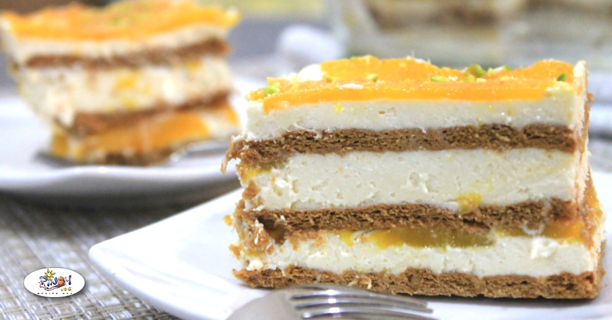

Mango Float
A very popular Filipino Dessert and a personal favorite. It is an easy to make dessert that your friends and family will love

Ingredients
- 2 cups of heavy cream
- One 14 ounce can of sweetened condensed milk
- 1/2 teaspoon pure vanilla extract
- 1 1/2 cups of graham cracker crumbs from a 9 ounce package
- 3 ripe mangoes diced
Instructions
- Combine the cream, sweetened condensed milk and vanilla extract in a large bowl
- Beat with a hand mixer until double in volume, about 4 minutes.
- Spread a scant 2 cups of cream in an 8 square baking dish
- Followed by 1/2 graham crackers and a third of the mangoes
- Continue alternating layers for a total of 9 layers that ends with mango
- Let it chill in the fridge for at least 8 hours
- Enjoy!